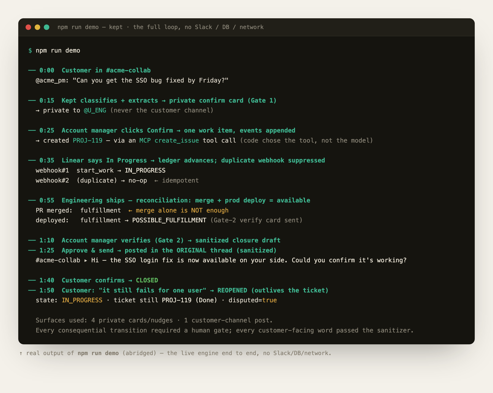

A Slack agent that keeps a human-verified, event-sourced obligation ledger: every request a customer makes and every promise your team makes — captured the moment it’s said, tracked through its real lifecycle, closed back in the original thread.
Track this as a promise to the customer? Nothing is recorded until a human confirms.
↑ a Kept Gate-1 confirm card — private to your team
Customer requests and team promises are made casually, in shared Slack channels — between two other messages, never written down as commitments.
Fulfillment lives elsewhere — in tickets, in code, in deploys, in someone’s memory. None of it points back to the thread where the promise was made.
The customer is usually the last to hear it’s done. The work ships; the follow-up gets dropped.
Inbound-only Slack ticketing (Pylon, Thena) logs what the customer asked. Kept tracks the part nobody owns: what you promised back.
Tracks what your team owes the customer — the promises — not just the inbound asks.
Closes on real availability to the customer, human-confirmed — never on a “Done” flag.
Returns to the original thread with the promise as evidence — on human approval.
Ticketing systems track whether work is marked done. Kept tracks whether the promise made to the customer was actually kept — and whether the customer was told.
Step through it — every transition writes one immutable line to the audit history on the right.
Kept advances an obligation as evidence arrives — a status change, a merged PR, a production deploy. But the two consequential steps — confirming the commitment (Gate 1) and verifying fulfillment before telling the customer (Gate 2) — require a person.
The same beats the live engine runs — no install. Confirm and verify cards stay private to the owner; the work item is created over MCP after Gate 1; only an approved, sanitized reply reaches the customer thread.
A faithful, in-browser replica of the real Block Kit cards. Run npm run demo for the live engine, or see all three cards as one image ↗.
Or watch the real engine run

The deterministic engine end to end — no Slack, database, or network. npm run demo reproduces it in seconds.
A customer request becomes a promise only when the account owner approves it.
A ticket status or merged PR is evidence, not truth. Closure needs reconciled evidence — merge + deploy reaching the customer, or the customer’s own confirmation — plus a human.
Repeated Slack events and webhooks never double-create an obligation or double-notify a customer.
Internal evidence — PRs, deploys, internal notes — never reaches the shared customer channel.
Every transition records source, evidence, actor, timestamp, prior/new state, and approval.
A customer dispute reopens it — even if the ticket stays “Done” forever.
Enforced by the deterministic engine and proven across an adversarial test battery — 140 automated tests, 7 rounds of adversarial verification, plus live Postgres/Redis integration tests.
Adversarially verifiedAn append-only event store is the backbone. Everything else feeds it or reads from it.
Classification, extraction, drafting only. Never decides a transition.
The only thing that writes state and triggers side effects.
The model interprets language; code controls state and actions.
Works with your stack
Slack is the live surface (real Events API + Block Kit). Linear and Jira plug in over MCP (Model Context Protocol) behind one swappable WorkItemAdapter — the demo runs on an in-process MCP server; the hosted Linear/Atlassian MCP servers plug in with a token.